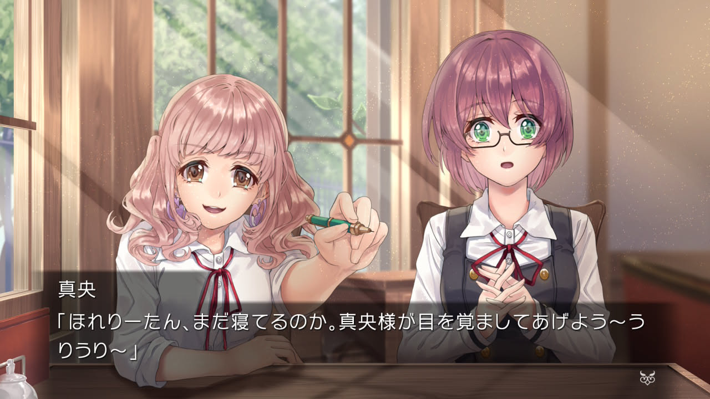
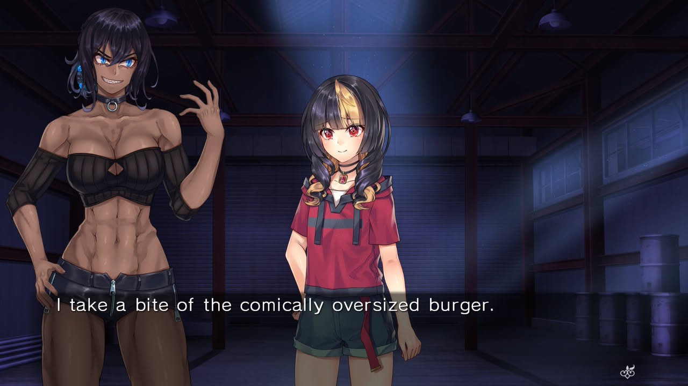
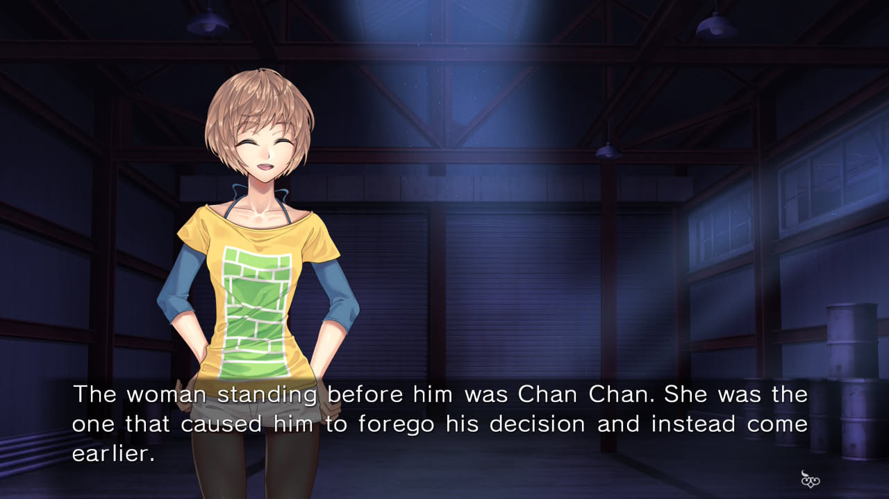

1game1week - Week 51 (12/24/25) - Fatal Twelve
Hey all! It's week 51! (12/18 -> 12/24)
It's Christmas Eve! I hope everyone's doing well. I'm spending this time with my family.
I don't really have a lot to say this week. We're almost to the end of the year. Honestly, I've already finished beating all the games I'll beat this year, I'm just playing the hell out of Week 52. It's legitimately so long that I saved it up until I had all the time I could get.
As of the time I'm posting this, I'm on vacation until the end of the year. My company's really nice to me and gives me the last week of the year as free time off. I'm going to take advantage of it by doing nothing but playing!
Anyways!
New games from 12/17 -> 12/23:
None! (Total 21)
Currently, my backlog is at +7 (lower is better, +0 from last week).
And onto 1g1w. Once again, a game is considered "beaten" if I've accomplished the main objective of the game.
GAME: Fatal Twelve
PLATFORM: Switch
GENRE: Visual Novel
STARTED ON: 11/27
BEATEN ON: 11/30
TOTAL PLAYTIME: 20 hours 31 minutes (tracked via Exophase)
As for every visual novel I read / play, I can't really talk much about "gameplay", since it's mostly just the A button.
The narrative is interesting. Twelve people from over the world happen to die at the same time, and a Goddess of Fate decides to bring them back to life and make them participate in a killing game called the Divine Selection.
It's not quite just "kill each other!", though. The game makes itself interesting by only allowing eliminations via finding out three things about a participant: their name, their cause of death, and their biggest regret. It essentially makes the killing game based on information warfare.
I'm not one for spoiling much. The story was entertaining, so if you feel inclined to, please give it a read.
Instead, I'll complain a little bit:
In the game, there are various narrator changes between Rinka, the protagonist, other killing game participants, and an omniscient narrator. It goes like:
-Rinka ("I did...") -> First person
-Other killing game participants ("I did...") -> First person
-Omniscient narrator ("Her feelings were...") -> Third person
This is cool, but the unfortunate part is that there is no indicator to who is speaking, so occasionally the transitions between narrators get confusing. To boot, there is no name header for both inner thoughts and for the third-person narrator, which makes it a little worse. For example:
This is spoken dialogue. Note the name (真央 -> Mao) on the top right of the dialogue box, as well as 「」being used. In English, "" is used. Also, all of these have a voice line associated with them:

This is Rinka's internal dialogue. There is no name at the top right of the dialogue box, and there is no 「」or "":

This is a third person narrator:

The real problem is distinguishing between internal dialogue and third person narrator. Aside from the obvious change between first / third, sometimes it just got confusing.
If I had it my way, I'd use the name bumper for both spoken dialogue inner thoughts. If you want to further distinguish between them, you can color text to be something like blue for inner thoughts, so they are very easily distinguishable.
It could also be solved with using different text boxes per character, though that might just end up being too busy, aesthetically.
There's also a couple very confusing changes between present / past tense in the novel. The specific dialogue is:
"Her statement strikes me as odd at first..." -> Present tense
"I looked into it later, though..." -> Narrating in past tense, as if looking back at this particular event?
"Miharu wasn't aware of this either..." -> Past tense??
"I dunno if Naomi knows all of this or not..." -> Back to present tense????????????????????
From what I remember this only happened once, but it was jarring enough to where I thought I was having a stroke for a second.
I also have a very minor complaint about localization of a minor character, Mao. Either I'm just reading it wrong, or they halfway changed her character from a lazy gyaru type to a more peppy type.
Here's one line:
ENG: "Mornin', troops! Sorry. Kinda overslept."
JP: 「おはよう〜。いやぁ、寝坊しやったよう。」 ("Morning~ Man, I overslept...")
ENG makes her sound a lot more peppy/silly especially with "troops", the exclamation point, short sentences. It makes her sound a lot more energetic than she is. But when the voice line has her damn near yawning... lol
It's really minor, and this character is minor, so it doesn't drastically change the narrative or anything. It might also just boil down to me not understanding the language all that well.
Overall, aside from minor typos, some awkward grammar, and a character potentially being mischaracterized, Fatal Twelve was a very enjoyable read. This game features five different endings, and I regrettably had to let it be after just one to make time for other games in 1g1w.
And given the game in Week 52, I really needed all the time I could get.

Thanks for reading! If you need to contact me for any reason, please feel free to email me at aru@hoshikawa-aru.com.